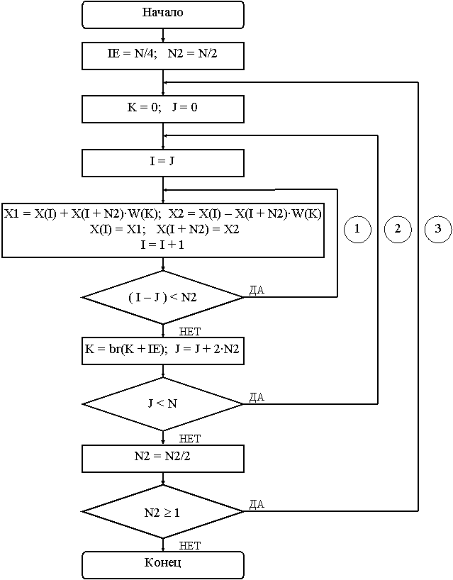

Существует четыре основных алгоритма БПФ по модулю 2 с замещением, различающихся способом прореживания данных (по времени или по частоте) и расположением входных и выходных данных (прямое или двоично-инверсное). Особенностью алгоритмов с замещением является то, что если входные данные располагаются в обычном порядке, то выходные – в двоично-инверсном и наоборот.
В каждой паре алгоритмов один является основным и соответствует рис. 5.1 для прореживания по времени и рис. 5.2 для прореживания по частоте, а второй получается перестановкой входных и выходных данных, чтобы поменять прямой порядок данных на двоично-инверсный или наоборот.
Ниже приведены граф-схема (рис. 6.1) и таблица индексов (табл. 6.1) 8-точечного БПФ, а также обобщенная схема алгоритма БПФ с прореживанием по времени и двоично-инверсным расположением входных данных (рис. 6.2). Далее приведены граф-схема (рис. 6.3) и таблица индексов (табл. 6.2) 8-точечного БПФ, а также обобщенная схема алгоритма БПФ с прореживанием по времени и прямым расположением входных данных (рис. 6.4).
Граф-схемы, таблицы индексов и схемы алгоритмов БПФ очень похожи, основное их различие заключается в начальных значениях приращений адресов и индексов, а также в направлении их изменения. При этом в дополнительном алгоритме изменяется также порядок следования поворачивающих множителей с прямого на двоично-инверсный, что незначительно усложняет алгоритм.
При программировании БПФ используются некоторые константы, определяющие положение и размерность обрабатываемых данных: М – число итераций БПФ, N = 2M – размерность БПФ (число обрабатываемых комплексных отсчетов), XFFT – начальный адрес обрабатываемых данных.

Рисунок 6.1 – Граф-схема БПФ с прореживанием по времени
и двоично-инверсным порядком входных данных
Таблица 6.1 - Изменение индексов для БПФ с прореживанием по времени и двоично-инверсным порядком входных данных
| № п/п | N2 | IE | J | I | I + N2 | K | Цикл | Переход |
| 1 | 1 | 4 | 0 | 0 | 1 | 0 | 1 | |
| 2 | 2 | 3 | 1 | |||||
| 3 | 4 | 5 | 1 | |||||
| 4 | 6 | 7 | 1 | 3 | ||||
| 5 | 2 | 2 | 0 | 0 | 2 | 0 | 1 | |
| 6 | 4 | 6 | 1 | 2 | ||||
| 7 | 1 | 1 | 3 | 2 | 1 | |||
| 8 | 5 | 7 | 1 | 3 | ||||
| 9 | 4 | 1 | 0 | 0 | 4 | 0 | 2 | |
| 10 | 1 | 1 | 5 | 1 | 2 | |||
| 11 | 2 | 2 | 6 | 2 | 2 | |||
| 12 | 3 | 3 | 7 | 3 | 2 |
Рисунок 6.2 – Схема алгоритма БПФ с прореживанием по времени
и двоично-инверсным порядком входных данных
Рисунок 6.3 – Граф-схема БПФ с прореживанием по времени
и прямым порядком входных данных
Таблица 6.2 - Изменение индексов для БПФ с прореживанием по времени и прямым порядком входных данных
| № п/п | N2 | IE | J | I | I + N2 | K | Цикл | Переход |
| 1 | 4 | 2 | 0 | 0 | 4 | 0 | 1 | |
| 2 | 1 | 5 | 1 | |||||
| 3 | 2 | 6 | 1 | |||||
| 4 | 3 | 7 | 1 | 3 | ||||
| 5 | 2 | 0 | 0 | 2 | 0 | 1 | ||
| 6 | 1 | 3 | 1 | 2 | ||||
| 7 | 4 | 4 | 6 | 2 | 1 | |||
| 8 | 5 | 7 | 1 | 3 | ||||
| 9 | 1 | 0 | 0 | 1 | 0 | 2 | ||
| 10 | 2 | 2 | 3 | 2 | 2 | |||
| 11 | 4 | 4 | 5 | 1 | 2 | |||
| 12 | 6 | 6 | 7 | 3 | 2 |

Рисунок 6.4 – Схема алгоритма БПФ с прореживанием по времени
и прямым порядком входных данных
При написании программы БПФ используется также ряд переменных (ячеек памяти данных):
.data
HOLDN .word 0h ; ячейка для хранения N
QUARTN .word 0h ; ячейка для хранения 1/4 N
N2 .word 0h ; ячейка для переменной N2
N1 .word 0h ; удвоенное значение N2
J .word 0h ; ячейка для переменной J
IADDR .word 0h ; адрес обрабатываемых данных
SINTBL .word 0h ; адрес в таблице синуса
COS .word 0h ; действительная часть W
SIN .word 0h ; мнимая часть W
I .word 0h ; ячейка для переменной I
IE .word 0h ; ячейка для переменной IE
INV .word 0h ; признак обратного БПФ
Назначение основных переменных следующее: N2 – расстояние между двумя элементами «бабочки»; J – начальный индекс первого элемента группы «бабочек» с одинаковым поворачивающим множителем; I – индекс первого элемента текущей «бабочки»; IE – шаг изменения поворачивающих множителей.
Поскольку каждый элемент «бабочки» является комплексной переменной и занимает в памяти две ячейки, то истинное расстояние в памяти между элементами «бабочки» задается переменной N1 = 2·N2. Вместо переменной K в программе используется переменная SINTBL, которая хранит не индекс, а значение адреса в таблице синуса.
- Изучить теоретические сведения по теме лабораторной работы (подразд. 6.2).
- Получить у преподавателя задание для выполнения практической части работы.
- Согласно заданию написать, оттранслировать и выполнить программу.
- Продемонстрировать результат трансляции и работы программы преподавателю.
- Оформить и защитить отчет по лабораторной работе.
- Цель работы и исходные данные.
- Описание алгоритма работы программы.
- Листинг программы с комментариями.
- Выводы по работе.